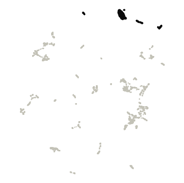
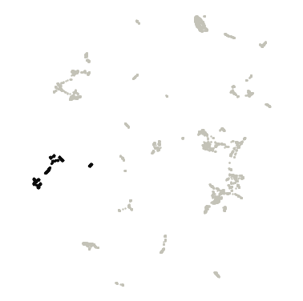
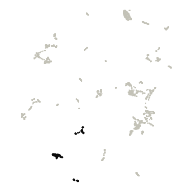
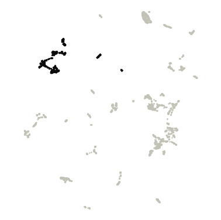
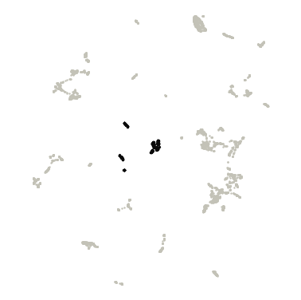
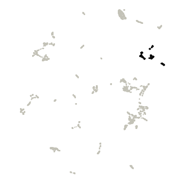
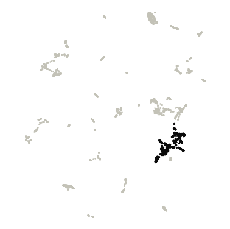
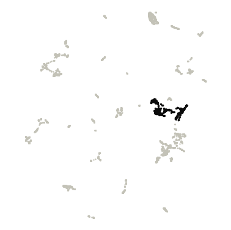

Gut vs Vaginal
Gut and vaginal genomes shown two ways: by their DNA sequence (DNABERT-S embeddings) and by their gene content (eggNOG gene families), each with its own clusters, plus a test of which gene families differ between the two microbiomes.
DNA-embedding map (DNABERT-S)
Genomes are placed by DNABERT-S embeddings of their DNA sequence, so genomes with similar sequence composition sit close together. Treat it as a visual impression of genetic similarity, not a measure of evolutionary distance.
Hover a point for its details. Click a legend entry to hide it; double-click to show only that entry (double-click again to show all). Drag to zoom; double-click the plot to reset. The smaller microbiome is drawn on top with a black outline. Grey points are outliers that HDBSCAN did not assign to any cluster. Open full screen.
Clusters were mostly consistent across random runs; boundaries may shift slightly. Across 5 runs with different random seeds, the map gave 6-8 clusters (mean agreement 0.87, lowest 0.73; Adjusted Rand Index).
| Cluster | Genomes | Gut | Vaginal |
|---|---|---|---|
| Cluster 0 | 566 | 565 (100%) | 1 (0%) |
| Cluster 1 | 289 | 155 (54%) | 134 (46%) |
| Cluster 2 | 377 | 287 (76%) | 90 (24%) |
| Cluster 3 | 580 | 441 (76%) | 139 (24%) |
| Cluster 4 | 2,279 | 2,126 (93%) | 153 (7%) |
| Cluster 5 | 377 | 295 (78%) | 82 (22%) |
| Cluster 6 | 725 | 642 (89%) | 83 (11%) |
| Outliers | 337 | 233 (69%) | 104 (31%) |
Functional map (eggNOG gene families)
Here genomes are placed by what their genes do. Each genome is described by the relative abundance of 7,527 eggNOG gene families (each family's share of the genome's genes), and genomes with similar profiles (Bray–Curtis dissimilarity) sit close together.
Hover a point for its details. Click a legend entry to hide it; double-click to show only that entry (double-click again to show all). Drag to zoom; double-click the plot to reset. The smaller microbiome is drawn on top with a black outline. Grey points are outliers that HDBSCAN did not assign to any cluster. Open full screen.
Clusters varied between random runs; treat cluster assignments with caution. Across 5 runs with different random seeds, the map gave 6-9 clusters (mean agreement 0.74, lowest 0.60; Adjusted Rand Index). Agreement between these functional clusters and the DNA-embedding clusters: Adjusted Rand Index 0.40 (1 = identical groupings, 0 = unrelated), computed on the 85% of genomes that are in a cluster on both maps.
Top 10 COG gene families in each functional cluster
How they are chosen. Enrichment is the mean relative abundance of a COG family in the cluster's genomes divided by its mean in all other clustered genomes of this view. Only families present in at least 10% of the cluster's genomes are ranked, so one-off genes can't top the list. "In this cluster" is the share of the cluster's genomes carrying the family. The ranking is descriptive; no per-cluster test is applied. 494 outlier genomes are excluded. The top 50 per cluster are in functional_cluster_top_cog_terms.csv.

Cluster 0 · 840 genomes
| COG | Description | Enrichment | In this cluster | In other clusters |
|---|---|---|---|---|
| COG3847 | Flp Fap pilin component | 84× | 85% | 1% |
| COG4646 | Protein of unknown function (DUF2958) | 51× | 11% | <1% |
| COG5265 | ATP-binding cassette subfamily B | 39× | 66% | 2% |
| COG2852 | Protein of unknown function (DUF559) | 30× | 87% | 12% |
| COG5606 | Helix-turn-helix domain | 29× | 27% | 2% |
| COG3883 | PFAM NLP P60 protein | 28× | 84% | 6% |
| COG3116 | cell division | 26× | 76% | 5% |
| COG2222 | sugar isomerase, AgaS family | 25× | 78% | 18% |
| COG3261 | Respiratory-chain NADH dehydrogenase, 49 Kd subunit | 23× | 80% | 10% |
| COG3260 | NADH ubiquinone oxidoreductase, 20 | 23× | 76% | 8% |

Cluster 1 · 408 genomes
| COG | Description | Enrichment | In this cluster | In other clusters |
|---|---|---|---|---|
| COG3539 | Fimbrial protein | 2,011× | 45% | <1% |
| COG4566 | helix_turn_helix, Lux Regulon | 688× | 52% | <1% |
| COG2916 | Belongs to the histone-like protein H-NS family | 347× | 64% | 0% |
| COG3113 | STAS domain | 305× | 76% | 0% |
| COG2969 | Stringent starvation protein B | 305× | 78% | 0% |
| COG2917 | probably involved in intracellular septation | 300× | 77% | 0% |
| COG2863 | Cytochrome c | 299× | 50% | <1% |
| COG2924 | Could be a mediator in iron transactions between iron acquisition and iron-requiring processes, such as… | 285× | 75% | 0% |
| COG2901 | Activates ribosomal RNA transcription. Plays a direct role in upstream activation of rRNA promoters | 282× | 73% | 0% |
| COG3017 | Plays a critical role in the incorporation of lipoproteins in the outer membrane after they are released by… | 269× | 71% | 0% |

Cluster 2 · 425 genomes
| COG | Description | Enrichment | In this cluster | In other clusters |
|---|---|---|---|---|
| COG5282 | hydrolase | 456× | 67% | <1% |
| COG0638 | Catalyzes the covalent attachment of the prokaryotic ubiquitin-like protein modifier Pup to the proteasomal… | 376× | 61% | <1% |
| COG3429 | Glucose-6-P dehydrogenase subunit | 293× | 49% | <1% |
| COG1938 | PAC2 family | 227× | 44% | <1% |
| COG4044 | May play a role in the intracellular transport of hydrophobic ligands | 189× | 33% | 0% |
| COG4850 | Uncharacterized conserved protein (DUF2183) | 183× | 47% | <1% |
| COG2047 | PAC2 family | 169× | 27% | 0% |
| COG1507 | Septum formation initiator family protein | 155× | 55% | <1% |
| COG3281 | Trehalose synthase | 145× | 28% | <1% |
| COG4425 | Alpha/beta-hydrolase family N-terminus | 142× | 26% | <1% |

Cluster 3 · 849 genomes
| COG | Description | Enrichment | In this cluster | In other clusters |
|---|---|---|---|---|
| COG5107 | Domain of Unknown Function (DUF349) | 295× | 81% | <1% |
| COG4704 | Fibrobacter succinogenes major domain (Fib_succ_major) | 153× | 84% | <1% |
| COG4797 | Motility related/secretion protein | 114× | 34% | <1% |
| COG3489 | Psort location CytoplasmicMembrane, score | 109× | 42% | <1% |
| COG3488 | Di-haem oxidoreductase, putative peroxidase | 95× | 47% | <1% |
| COG4360 | Domain of unknown function (DUF4922) | 89× | 20% | 0% |
| COG3712 | Domain of unknown function (DUF4974) | 75× | 58% | 3% |
| COG4206 | Psort location OuterMembrane, score | 60× | 93% | 11% |
| COG4520 | Psort location CytoplasmicMembrane, score 9.46 | 59× | 30% | <1% |
| COG4085 | PFAM nucleic acid binding, OB-fold, tRNA | 57× | 55% | 2% |

Cluster 4 · 345 genomes
| COG | Description | Enrichment | In this cluster | In other clusters |
|---|---|---|---|---|
| COG5468 | Lipopolysaccharide-assembly | 93× | 14% | <1% |
| COG4765 | protein conserved in bacteria | 87× | 14% | <1% |
| COG3820 | protein conserved in bacteria | 86× | 14% | <1% |
| COG3814 | Stringent starvation protein B | 82× | 14% | <1% |
| COG5352 | GcrA cell cycle regulator | 72× | 14% | <1% |
| COG4321 | protein related to arylsulfate sulfotransferase involved in siderophore biosynthesis | 71× | 13% | <1% |
| COG3750 | Uncharacterized protein conserved in bacteria (DUF2312) | 64× | 15% | <1% |
| COG1424 | Catalyzes the transformation of pimelate into pimeloyl- CoA with concomitant hydrolysis of ATP to AMP | 41× | 26% | <1% |
| COG4752 | SAM-dependent RNA methyltransferase | 40× | 42% | 1% |
| COG5375 | Lipopolysaccharide-assembly, LptC-related | 40× | 12% | <1% |

Cluster 5 · 400 genomes
| COG | Description | Enrichment | In this cluster | In other clusters |
|---|---|---|---|---|
| COG4835 | Protein of unknown function (DUF1149) | 263× | 44% | 0% |
| COG4072 | Protein of unknown function C-terminal (DUF3324) | 205× | 17% | <1% |
| COG4814 | Alpha/beta hydrolase of unknown function (DUF915) | 189× | 48% | <1% |
| COG5506 | Protein of unknown function (DUF1694) | 133× | 62% | <1% |
| COG4703 | Protein of unknown function (DUF1797) | 118× | 49% | <1% |
| COG4633 | Cupredoxin-like domain | 108× | 35% | <1% |
| COG4918 | Belongs to the HesB IscA family | 73× | 24% | <1% |
| COG4858 | Protein of unknown function (DUF1129) | 72× | 66% | 1% |
| COG5353 | Protein conserved in bacteria | 67× | 56% | 1% |
| COG4483 | Bacterial protein of unknown function (DUF910) | 65× | 58% | 1% |

Cluster 6 · 999 genomes
| COG | Description | Enrichment | In this cluster | In other clusters |
|---|---|---|---|---|
| COG5565 | Terminase RNaseH-like domain | 69× | 11% | <1% |
| COG5019 | ATPase. Has a role at an early stage in the morphogenesis of the spore coat | 37× | 34% | 1% |
| COG0857 | DHHA2 | 18× | 42% | 3% |
| COG3411 | Ferredoxin | 14× | 51% | 7% |
| COG3294 | Metal dependent phosphohydrolases with conserved 'HD' motif. | 12× | 42% | 3% |
| COG2000 | Putative Fe-S cluster | 11× | 36% | 5% |
| COG4813 | Trehalose utilisation | 11× | 24% | 3% |
| COG0070 | PFAM glutamate synthase alpha subunit domain protein | 9× | 32% | 4% |
| COG4474 | Protein of unknown function (DUF1273) | 9× | 68% | 13% |
| COG3432 | Domain of unknown function (DUF4364) | 9× | 86% | 14% |

Cluster 7 · 770 genomes
| COG | Description | Enrichment | In this cluster | In other clusters |
|---|---|---|---|---|
| COG3359 | Predicted 3'-5' exonuclease related to the exonuclease domain of PolB | 41× | 71% | 2% |
| COG4636 | Putative restriction endonuclease | 18× | 32% | 2% |
| COG1655 | Uncharacterized protein conserved in bacteria (DUF2225) | 17× | 18% | 1% |
| COG4091 | domain protein | 16× | 22% | 2% |
| COG1728 | Protein of unknown function (DUF327) | 12× | 20% | 2% |
| COG4717 | Psort location Cytoplasmic, score 8.87 | 11× | 49% | 4% |
| COG1308 | Domain of unknown function (DUF4342) | 9× | 18% | 2% |
| COG4548 | von Willebrand factor (vWF) type A domain | 8× | 37% | 6% |
| COG4465 | DNA-binding protein that represses the expression of many genes that are induced as cells make the transition… | 8× | 66% | 7% |
| COG1406 | Hemerythrin HHE cation binding domain | 7× | 17% | 3% |
What differs between gut and vaginal genomes?
For each eggNOG gene family, a two-sided Mann-Whitney U test compares its relative abundance (its share of a genome's genes) between the two microbiomes. P-values are corrected for all 7,527 tests with the Benjamini–Hochberg false discovery rate.
Every gene family tested
How to read this. The effect size (rank-biserial correlation, −1 to +1) says how consistently one microbiome ranks higher: +1 means every vaginal genome has more of the family than every gut genome, −1 the reverse, 0 no tendency. With many genomes even tiny differences reach significance, so families are highlighted only with q < 0.05 and an effect of at least 0.3. "In gut genomes" is the share of gut genomes carrying the family at all.
Top 25 gene families higher in gut genomes
Sorted by effect size. All results: comparison_mannwhitney.csv.
| Gene family | Description | In gut genomes | In vaginal genomes |
Per 1,000 genes (gut) | Per 1,000 genes (vaginal) | Effect size | q-value |
|---|---|---|---|---|---|---|---|
| COG0655 | NADPH-dependent FMN reductase | 72% | 23% | 0.89 | 0.18 | -0.55 | 8.4e-138 |
| COG1592 | Rubrerythrin | 82% | 37% | 0.98 | 0.35 | -0.53 | 1.9e-126 |
| 2E3FD | TSCPD domain | 60% | 8% | 0.35 | 0.04 | -0.53 | 2.6e-138 |
| COG1971 | Probably functions as a manganese efflux pump | 71% | 23% | 0.48 | 0.14 | -0.49 | 4.3e-112 |
| COG1853 | Psort location Cytoplasmic, score 8.87 | 76% | 38% | 0.76 | 0.29 | -0.46 | 2.3e-96 |
| COG1032 | Radical SAM domain protein | 74% | 36% | 1.06 | 0.36 | -0.46 | 2.0e-96 |
| COG2768 | PFAM 4Fe-4S ferredoxin iron-sulfur binding domain protein | 68% | 26% | 0.72 | 0.23 | -0.45 | 4.5e-95 |
| COG1387 | DNA polymerase alpha chain like domain | 73% | 31% | 0.71 | 0.26 | -0.45 | 8.4e-92 |
| COG1453 | aldo keto reductase | 52% | 9% | 0.55 | 0.07 | -0.44 | 2.6e-101 |
| COG0696 | Catalyzes the interconversion of 2-phosphoglycerate and 3-phosphoglycerate | 80% | 37% | 0.55 | 0.26 | -0.44 | 1.7e-84 |
| COG0642 | GHKL domain | 96% | 88% | 4.09 | 2.30 | -0.43 | 5.2e-81 |
| COG0370 | transporter of a GTP-driven Fe(2 ) uptake system | 86% | 59% | 0.93 | 0.49 | -0.43 | 3.1e-80 |
| COG0067 | Psort location Cytoplasmic, score 8.87 | 57% | 18% | 0.37 | 0.10 | -0.41 | 4.2e-83 |
| COG0646 | Homocysteine S-methyltransferase | 65% | 27% | 0.52 | 0.17 | -0.41 | 2.8e-78 |
| 2C4R5 | Psort location Cytoplasmic, score | 47% | 8% | 0.27 | 0.04 | -0.40 | 9.8e-89 |
| COG2199 | diguanylate cyclase | 65% | 28% | 1.46 | 0.52 | -0.40 | 2.1e-75 |
| COG0726 | Polysaccharide deacetylase | 89% | 67% | 1.52 | 0.79 | -0.40 | 2.0e-69 |
| COG0680 | Initiates the rapid degradation of small, acid-soluble proteins during spore germination | 55% | 16% | 0.34 | 0.10 | -0.39 | 5.5e-76 |
| COG2208 | Stage II sporulation protein E | 61% | 25% | 0.56 | 0.21 | -0.38 | 5.4e-68 |
| COG1433 | Dinitrogenase iron-molybdenum cofactor | 53% | 15% | 0.37 | 0.11 | -0.37 | 1.1e-71 |
| COG0648 | Endonuclease IV plays a role in DNA repair. It cleaves phosphodiester bonds at apurinic or apyrimidinic sites… | 69% | 31% | 0.42 | 0.20 | -0.37 | 1.4e-63 |
| COG4905 | Psort location CytoplasmicMembrane, score | 57% | 20% | 0.70 | 0.21 | -0.37 | 5.4e-68 |
| 2ANER | stage V sporulation protein | 42% | 6% | 0.48 | 0.05 | -0.37 | 1.2e-79 |
| COG1396 | Helix-turn-helix domain | 94% | 80% | 3.61 | 1.91 | -0.37 | 7.9e-60 |
| COG1028 | Enoyl-(Acyl carrier protein) reductase | 97% | 80% | 2.41 | 1.63 | -0.37 | 4.0e-59 |
Top 25 gene families higher in vaginal genomes
Sorted by effect size.
| Gene family | Description | In gut genomes | In vaginal genomes |
Per 1,000 genes (gut) | Per 1,000 genes (vaginal) | Effect size | q-value |
|---|---|---|---|---|---|---|---|
| COG0803 | Belongs to the bacterial solute-binding protein 9 family | 55% | 83% | 0.42 | 1.43 | +0.53 | 2.8e-132 |
| COG1108 | ABC 3 transport family | 51% | 81% | 0.38 | 1.21 | +0.53 | 1.3e-133 |
| COG1121 | ABC transporter | 52% | 81% | 0.35 | 1.03 | +0.53 | 3.0e-133 |
| COG0209 | Provides the precursors necessary for DNA synthesis. Catalyzes the biosynthesis of deoxyribonucleotides from… | 43% | 78% | 0.25 | 0.69 | +0.51 | 1.1e-132 |
| COG0208 | Provides the precursors necessary for DNA synthesis. Catalyzes the biosynthesis of deoxyribonucleotides from… | 24% | 65% | 0.13 | 0.49 | +0.48 | 1.5e-154 |
| COG0588 | Catalyzes the interconversion of 2-phosphoglycerate and 3-phosphoglycerate | 23% | 62% | 0.14 | 0.53 | +0.43 | 4.1e-128 |
| COG0516 | Catalyzes the conversion of inosine 5'-phosphate (IMP) to xanthosine 5'-phosphate (XMP), the first committed… | 83% | 90% | 0.53 | 0.89 | +0.43 | 1.2e-79 |
| COG0225 | Has an important function as a repair enzyme for proteins that have been inactivated by oxidation. Catalyzes… | 33% | 66% | 0.20 | 0.50 | +0.39 | 3.8e-88 |
| COG0450 | alkyl hydroperoxide reductase | 34% | 64% | 0.21 | 0.49 | +0.37 | 6.5e-79 |
| COG0708 | exodeoxyribonuclease III | 73% | 84% | 0.46 | 0.74 | +0.35 | 2.5e-54 |
| COG3579 | Peptidase C1-like family | 23% | 54% | 0.22 | 0.76 | +0.34 | 3.5e-83 |
| COG0847 | DNA polymerase III | 55% | 74% | 0.45 | 0.83 | +0.34 | 1.3e-55 |
| COG0783 | Belongs to the Dps family | 20% | 50% | 0.11 | 0.36 | +0.34 | 3.7e-88 |
| COG0719 | Uncharacterized protein family (UPF0051) | 74% | 84% | 0.76 | 1.26 | +0.33 | 4.3e-49 |
| COG0035 | Catalyzes the conversion of uracil and 5-phospho-alpha- D-ribose 1-diphosphate (PRPP) to UMP and diphosphate | 72% | 86% | 0.39 | 0.59 | +0.33 | 6.0e-48 |
| COG0587 | DNA polymerase | 94% | 96% | 0.62 | 0.94 | +0.33 | 8.8e-47 |
| COG1464 | Belongs to the nlpA lipoprotein family | 46% | 69% | 0.37 | 0.69 | +0.32 | 1.7e-53 |
| COG2151 | FeS assembly SUF system protein | 23% | 52% | 0.13 | 0.38 | +0.32 | 8.0e-75 |
| COG2011 | ABC transporter permease | 45% | 67% | 0.29 | 0.54 | +0.32 | 1.9e-52 |
| COG1780 | Probably involved in ribonucleotide reductase function | 10% | 40% | 0.05 | 0.30 | +0.31 | 1.5e-118 |
| COG3590 | Peptidase family M13 | 22% | 50% | 0.14 | 0.41 | +0.31 | 3.8e-69 |
| COG0142 | Belongs to the FPP GGPP synthase family | 88% | 89% | 0.65 | 0.89 | +0.31 | 2.4e-41 |